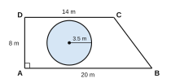

| For examiner's use only | |
|---|---|
| Part I – A | / 30 |
| Part I – B | / 20 |
| Part II | / 50 |
| Total | / 100 |
Part A – Answer all questions in the space provided. (2 marks each)
Find the 10th term of the number pattern 50, 46, 42, 38, …
Find the value of 110102 − 10112 and give the answer in base two.
Write 0.375 as a fraction in its simplest form.
A student scored 42 marks out of 60. Express this as a percentage.
Expand: (a + 3b)(a − 3b)
Simplify: (a2b)3 ÷ a4b
Round off 47 850 to the nearest thousand.
Solve: 4 − 3x = 2x − 11
Describe the locus of points on a plane which are 3 cm from a straight line AB.
In triangle ABC, Ĉ = 90° and  = 2B̂. Find B̂.
The circumference of a circle is 132 cm. Find its radius. (π = 227)
Can 9 cm, 12 cm and 15 cm be the sides of a right-angled triangle? Give a reason.
Write all the integers x that satisfy 2 < 2x ≤ 10.
n(U) = 30 and n(A) = 18. Find n(A′).
Make r the subject of the formula C = 2πr.
Part B – Answer both questions on this paper. (10 marks each)
A point P on level ground is 30 m from the foot F of a vertical tower FT. The angle of elevation of the top T of the tower from P is 40°.
U = {1, 2, 3, …, 12}, A = {multiples of 2} and B = {multiples of 3} are subsets of U.
Answer five questions only. (10 marks each)
A taxi charges a fixed fee of Rs 100 plus Rs 80 per kilometre. The fare y (in rupees) for a journey of x km is given by y = 80x + 100.
| x (km) | 0 | 1 | 2 | 3 | 4 | 5 |
|---|---|---|---|---|---|---|
| y (Rs) | 100 | … | 260 | … | … | 500 |
Use only a straight edge with a cm/mm scale and a pair of compasses for the following constructions. Show all construction lines.
ABCD is a garden in the shape of a right trapezium, with AB ∥ DC and DÂB = 90°. AB = 20 m, DC = 14 m and AD = 8 m. There is a circular flower bed of radius 3.5 m in the garden. (π = 227)
